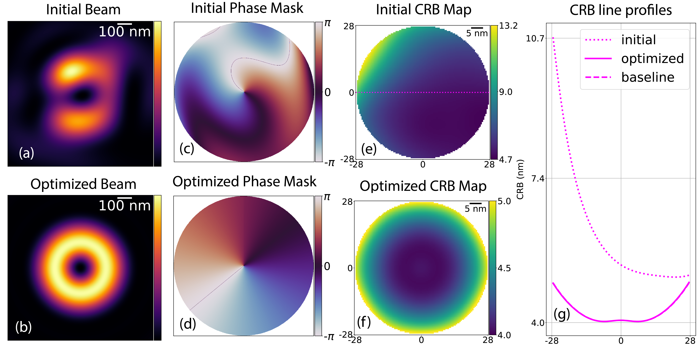
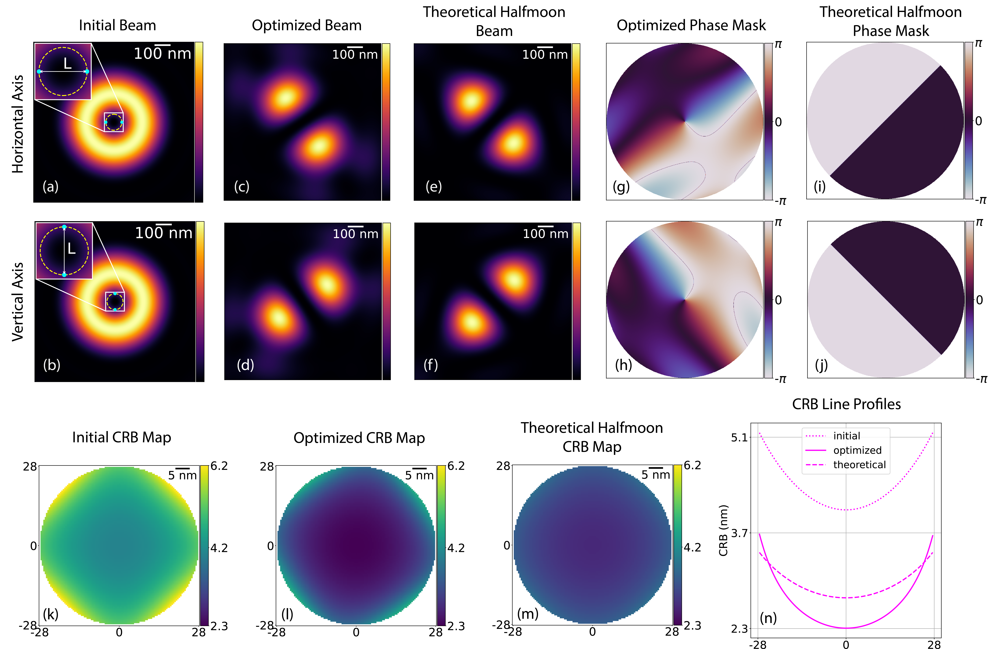
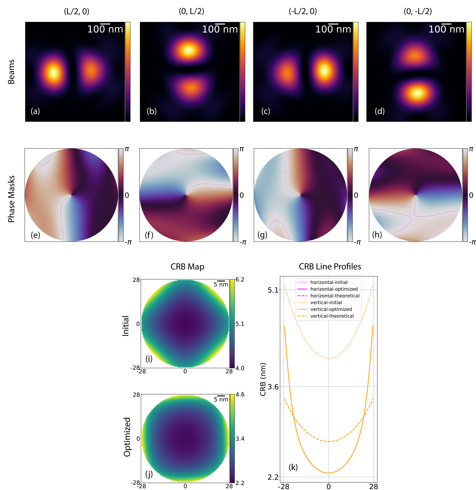
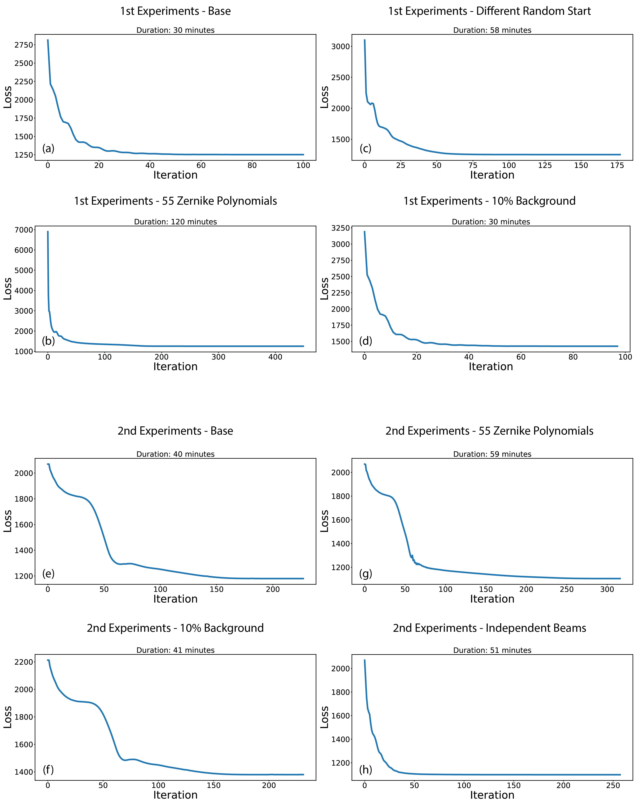
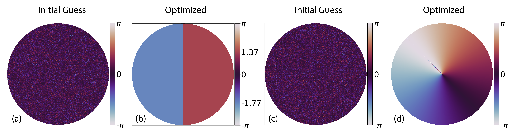

Results¶
We present the results of two distinct groups of experiments aimed at optimizing beam shapes for MINFLUX. In the first group, we investigate the case in which all beams are translated versions of each other, questioning the optimality of the well-known donut beam. In the second one, we relax the optimization conditions to multiple beam shapes as it has been proposed in recent experiments [30, 196].
Despite the inherent complexity of nonlinear model and the nonconvex optimization, the final beam patterns we present demonstrate remarkable robustness, consistently emerging across a wide range of initial conditions and optimization parameters. Following these numerical results, we provide a mathematical analysis that substantiates these beam shapes as optimal in a mathematical sense.
Numerical Optimality¶
Donut Beam¶
In the first group, we adopt the original MINFLUX arrangement illustrated in Fig. 42 (b), expanded to a total of seven beams, i.e. one at the center of the FOV and other six on a circle of diameter L nm, to mitigate anisotropy in the CRB (see Fig. 42 (c) and Fig. 47 (f)). All seven beams are constrained to have the same shape. This configuration simplifies the experimental implementation as it allows for a fixed phase mask in Fourier space, while another optical element (e.g., a galvo mirror) simply translates the excitation pattern. We initialized the optimization with a perturbed donut beam (see Fig. 47 (a)). To be precise, we use a vortex phase mask \(\kappa\) and random initial coefficients \(\mathbf{C}\).


Fig. 47 Results in the case of the standard MINFLUX setting with seven beams (one in the center of the FOV and the other six on a circle with radius \(L=100\) nm) and only one beam shape. (a) and (b): Initial and optimized excitation beam shape. (c) and (d): Initial and optimized phase masks of the corresponding beams in (a) and (b). (e) and (f): Initial and optimized CRB map. (g) Comparison of the line profiles in the case of the initial (dotted), optimized (solid) and baseline (dashed) CRB maps along the horizontal straight line through the center of the FOV as illustrated in (e).¶
The results of this optimization, shown in Fig. 47 (b) and (d) exhibit a clear evolution towards a donut shape. Fig. 47 (g) displays the CRB line profiles and reveals a significant decrease in CRB values after optimization. We further compare CRB line profiles along the horizontal line through the center of the FOV (indicated in Fig. 47 (e)) for the initial and optimized CRB maps in Fig. 47 (g). We see that the CRB values of our optimized beam closely match those of a reference donut beam with seven positions (both curves overlap). The entries of the optimized Zernike coefficients shared by all 15 polynomials in Table 7 show that the vortex term dominates the others, which confirms the optimality of the donut beam.
Index |
Initial |
Optimized |
Index |
Initial |
Optimized |
|---|---|---|---|---|---|
0 |
0.19 |
4.0264 |
8 |
-0.19 |
-0.0073 |
1 |
-0.11 |
-0.0001 |
9 |
-0.52 |
-0.0088 |
2 |
-0.15 |
0.0281 |
10 |
0.65 |
0.0094 |
3 |
-0.60 |
-0.0129 |
11 |
0.37 |
0.0050 |
4 |
0.52 |
0.0034 |
12 |
-0.66 |
0.0001 |
5 |
-0.31 |
0.0008 |
13 |
-0.62 |
0.0014 |
6 |
0.28 |
-0.0013 |
14 |
-0.05 |
-0.0024 |
7 |
0.27 |
-0.0021 |
Vortex |
1.00 |
0.9906 |
To verify the robustness of our result, we have carried out additional experiments with different numbers of Zernike polynomials, different random Zernike coefficients as initialization, and different levels of background. The results, which are provided in Fig. 48 show that the optimized beam consistently converge to the donut shape across all scenarios and firmly establish it as a robust optimal solution for this MINFLUX configuration.

Fig. 48 Optimization results of additional experiments with the setup of the first group of experiments with a single beam shape. Top two rows: Different random initialization of Zernike coefficients. Middle: First 55 (instead of 15) Zernike polynomials. Bottom two rows: 10% background (instead of 5%). (a)/(h)/(o) Initial beam shape. (b)/(i)/(p) Optimized shape. (c)/(j)/(q) and (d)/(k)/(r): Corresponding phase masks of the initial and optimized beams. (e)/(l)/(s) and (f)/(m)/(t): CRB map of the initial and the optimized. (g)/(n)/(u) CRB profiles of the horizontal (represented in color magenta) and vertical (represented in color orange) lines through the center of the FOV for the initial (dotted), the optimized (solid), and the baseline (dashed).¶
Half-Moon Beam¶
In the second group of experiments, we introduced a configuration of two distinct pairs of beams, and within each pair the beams are identical. We arranged the centers of these beams on a circle of diameter \(L=100\)nm at locations \((\frac{L}{2}, 0), (0, \frac{L}{2}), (-\frac{L}{2}, 0)\) and \((0, -\frac{L}{2})\) in \(x-y\) coordinates. Such as a layout is termed as a diamond beam setting. We initialize with four perfect donut beams (see Fig. 42 (b)) as it is optimal for the standard setting. In Fig. 49 (a), we show the image of the superposition of the intensity of all the four donut beams and the diamond setting.


Fig. 49 Diamond setting and two pairs of beam shapes. (a), (c), and (e): Beams on the horizontal axis for the initial (a), optimized (c), and theoretical (e) cases. (b), (d), and (f): Beams on the vertical axis for the initial (b), optimized (d), and theoretical (f) cases. (g)-(j): Phase masks for the corresponding beams on the horizontal and vertical axes for the optimized and theoretical cases. (k)-(m): CRB maps of the initial, optimized, and theoretical cases. (n): Horizontal line profiles through the center of the FOV of the CRB maps (k)-(m).¶
The PSF shapes evolved significantly during optimization and converged to a configuration characterized by two approximately symmetric peaks separated by a valley of low intensities (see Fig. 49 (c) and (d)). Further, we notice that the axes of the two pairs of beams are orthogonal to each other, oriented along the edges of the square formed by the beam centers. The associated phase masks of these beams are shown in Fig. 49 (g) and (f). This optimized configuration significantly improves the CRB values by a factor of two (see Fig. 49 (k) and (l)).
The optimal beams resemble the existing half-moon beams which have been seen in [30]. In practice, these shape can be generated by a \(\pi\)-phase-shifted half disk in the pupil plane (Fig. 49 (i) and (j)). These theoretical half-moon beams yield slightly more uniform CRB maps compared to the optimized PSFs, as shown in Fig. 49 (l) and (m). A close compare of the CRB line profiles or the initial, optimized, and theoretical half-moon beams is shown in Fig. 49 (n). The CRB of both the optimized and the theoretical half-moon beams greatly improves upon the initial start.
Similar to the first group of experiments, we tested the robustness of the optimized beam across various optimization conditions, including different number of Zernike polynomials and different level of background. The optimization consistently produces the same beam shape (see Fig. 50).

Fig. 50 Optimization results of additional experiments with the setup of the second group of experiments with two pairs of beam shapes. First two rows: First 55 (instead of 15) Zernike polynomials. Last two rows: 10% background (instead of 5%). (a)/(h) The intensity of all the four optimized beams superimposed into one image. (b)/(i) CRB map of the optimized result. (c)/(j) and (d)/(k): Optimized beams at locations on the horizontal (b) and vertical (c) axis. (e)/(l) and (f)/(m): Corresponding phase masks of the two optimized beams. (g)/(n) CRB profiles of the horizontal (represented in color magenta) and vertical (represented in color orange) lines through the center of the FOV for the initial (dotted) and the optimized (solid).¶
In addition, we ran another experiment where we allowed all four beams to have independent shapes. It turns out that the resulting beam shape is still half-moon-like with similar CRB performance (see Fig. 51). We thus conclude that the half-moon configuration is a stable and optimal solution.


Fig. 51 Optimization results with the setup of the second group of experiments with four independent beams (instead of in two groups thereof). First row: Optimized beams centered at the four locations \(((\frac{L}{2}, 0))\) (a), \(((0, \frac{L}{2}))\) (b), \(((-\frac{L}{2}, 0))\) (c) and \(((0, -\frac{L}{2}))\) (d). Second row: Associated phase masks of beams in the first row. (i) and (j): Initial and optimized CRB maps. (k) CRB line profiles along the horizontal and vertical straight lines (magenta and orange) through the center of the CRB maps for the initial (dotted), optimized (solid), and theoretical (dashed) cases.¶
Computational Aspects¶
Key optimization parameters are fixed across both experiments:
In the PSF module, the wavelength of the excitation light is 640 nm.
The numerical aperture of the setup is 1.42.
The background \(b\) in Eq. (108) is set to be 5% of the mean value of \(h\) on the whole object plane.
In the pupil module, we use the first 15 Zernike polynomials (\(D=15\)).
The size of the object plane is \((1000\times1000)\) nm.
The total number of photons received at each location is \(N=100\).
The efficiency \(\alpha\) of the experiment is assumed to be 1.
The beam positions are defined with \(L = 100\) nm.
The radius \(\tau\) of the optimization FOV is 28 nm.
The regularization term is computed on a ROI \(\Omega_\text{h}\) of radius 170 nm, approximately the radius of the donut beam.
The regularization weight \(\gamma\) is 0.1.
The tolerance of convergence is \(10^{-6}\).
The computational time and the evolution of the loss of each optimization experiment presented are shown in Fig. 52.


Fig. 52 Evolution of loss and duration of the optimization. (a)-(d): First group of experiments. (e)-(h) Second group of experiments.¶
The code to produce the optimization results is available online [204].
Theoretical Analysis of the Optimality¶
To complement our optimization results, we carried out a theoretical analysis of the optimality. We demonstrate how the donut and half-moon PSFs are optimal in a specific mathematical sense. Precisely, the optimal PSFs maximize the norm of the gradient of the electric field at the center of the field of view: for a single direction in the half-moon case, and averaged over all directions for the donut PSF. The half-moon case relies on an analytic proof, while the donut case relies on numerical evidence. These results provide a heuristic explanation for the final PSF forms; they do not account for shifts and the estimation problem, which necessitates our Fisher-information framework.
We recall the definition of the PSF intensity \(h: \mathbb{R}^2 \to \mathbb{C}\)
where the electric field \(g: \mathbb{R}^2 \to \mathbb{C}\) is given by
The pupil function \((P(\mathbf{k}): \Lambda \rightarrow \mathbb{C})\) is defined on a finite support \((\Lambda \subset \mathbb{R}^2)\), given by the low-pass-filtering disk that corresponds to the numerical aperture, with the constraint that \((P)\) has unit modulus over \((\Lambda)\) so that
We start by explaining our heuristic in 1D MINFLUX minimizes the photon flux by precisely targeting and modulating the emission of fluorophores near the zero region of the excitation PSF. We thus assume in 1D that \(h(0) = g(0) = 0\) and express the Maclaurin expansion of \(g\) as \(g(x) = g'(0) x + \mathcal{O}(x^2)\), which implies that the approximated PSF \(\tilde{h}(x) = |g'(0)|^2 x^2\) is a centered parabola. We aim to maximize the curvature coefficient \(|g'(0)|^2\) to maximize the excitation change for a change in the particle position. This heuristic was first introduced in the original MINFLUX paper [32].
Half-Moon Beam¶
To extend to 2D the 1D Maclaurin approximation, we choose a direction defined by a unit vector \(\mathbf{n}\). The directional gradient \(D_\mathbf{n} g(\mathbf{r}) \in \mathbb{C}\) of \(g\) along a given direction \(\mathbf{n}\) at \(\mathbf{r}=\mathbf{0}\) is defined as
From Eq. (138) and the properties of Fourier transform, Eq. (139) can be expressed as
where \(\cdot\) denotes the scalar product between two vectors. Our aim is to find the pupil function \(P\) that maximizes the directional metric
Using the triangular inequality and Eq. (138), we have that
Equality is achieved when \(P(\mathbf{k}) (\mathbf{k} \cdot \mathbf{n}) = \mathrm{e}^{\mathrm{j} \alpha}\) for a constant \(\alpha\) for all \(\mathbf{k} \in \Lambda\). This yields that \(P(\mathbf{k}) = \mathrm{e}^{-\mathrm{j}\operatorname{Arg}(\mathbf{k} \cdot \mathbf{n}) + \alpha}\) and corresponds to a half-moon pupil function as depicted in Fig. 53 (b). This half-moon pupil function is characterized by a \(\pi\)-phase jump between the two half disks. It yields the optimal PSF that maximizes the gradient of the electric field in a single direction.
If one wants to minimize a single-directional gradient norm, the optimal pupil function corresponds to a half-moon PSF. This supports the result of our CRB optimization as we obtain two PSFs that maximize gradients along orthogonal directions to solve our 2D localization-estimation problem.


Fig. 53 Numerical results of the projected power iterations. (a)-(b): Initial guess (a) and final outcome (b) of the pupil of optimization for a single given direction \((\mathbf{n}=(1, 0))\). (c)-(d): Initial guess (c) and final outcome (d) of the pupil of optimization averaged over all directions on the unit circle. Both initial guesses (a) and (c) are random phase masks with values between \(((-\pi))\) and \((\pi)\).¶
Donut Beam¶
Another desirable metric to optimize is the isotropic version of \(m_\mathbf{n}\), averaging over all directions \(\mathbf{n}\) on the unit circle \(O\). This metric is
This expression is less straightforward to maximize. Still, we can reformulate it as a quadratic-programming problem in the Hilbert space \(\mathcal{H}\) of compactly supported functions \(f: \Lambda \rightarrow \mathbb{C}\) with the Hermitian product \(\langle f^\mathrm{H}, g\rangle = \iint_\Lambda f^*(\mathbf{k}) g(\mathbf{k})\mathrm{d}\mathbf{k}\). For convenience, we will denote by \(p \in \mathcal{H}\) the pupil function and, for any unit vector \(\mathbf{n}\), \(k_\mathbf{n} \in \mathcal{H}\) as
The metric to optimize can be rewritten as
where we have introduced the symmetric linear operator \(K = \int_O k_\mathbf{n} k_\mathbf{n}^\mathrm{H} \mathrm{d}\mathbf{n}\), operating in the Hilbert space \(\mathcal{H}\). To obtain Eq. (145), the reordering of the integrals is legitimated by the compact support of functions in \(\mathcal{H}\).
Hence, we want to maximize this quadratic form over the set of pupil functions \(p \in \mathcal{H}\) with the unit element-wise norm constraint of Eq. (138). We compute the solution numerically using projected power iterations as
with the projector on the constraint set defined as:
We see in Fig. 53 (b) the results of these power iterations. They yield the phase ramp phase characteristics of the donut PSF. The integral over \(\mathbf{n} \in O\) is discretized uniformly over the unit circle with 100 terms. The pupil function \(p \in \mathcal{H}\) is discretized over a uniform grid for \((k_\text{x}, k_\text{y})\), as a \((2048\times2048)\) px image. A total of 100 power iterations is performed.
The projected power iterations employed for our complex-valued quadratic-programming problem with quadratic constraints lack theoretical convergence guarantees. Similar formulations arise in other applications, such as electromagnetic beamforming [205]. However, by repeating the power iterations with different initial guesses, the donut pupil function consistently emerges as the solution, which demonstrates its robustness.
If one wants to minimize the directional derivative norm averaged along all directions, the optimal pupil function corresponds to a donut PSF. This supports the result of our CRB optimization as we obtain the donut PSF when only a single shifted PSF is allowed.